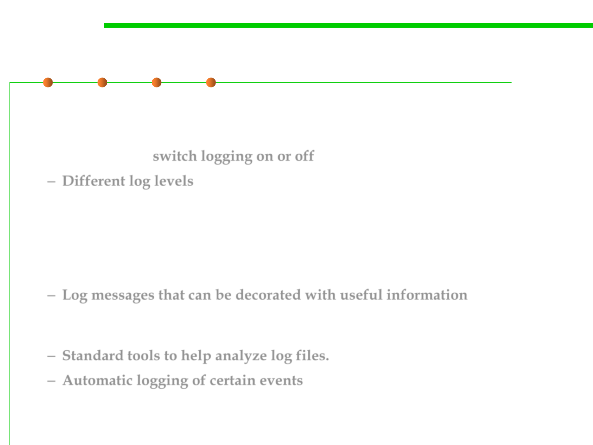

Logging frameworks
7.4 Debugging
▪ A logging framework provides you with a great deal of useful
functionality for free:
– The ability to switch logging on or off in particular areas as needed.
– Different log levels, allowing you to fine-tune the amount of logging
generated：occasions where the software hit a fatal error or just the
headlines of what the software is up to without any of the detail →
increase it to generate more detail, perhaps even to the extent of creating a
detailed trace of exactly which functions were called when and with what
parameters.
– Log messages that can be decorated with useful information such as
which log level or module the message is associated with or even the exact
source file line number.
– Standard tools to help analyze log files.
– Automatic logging of certain events, like unhandled exceptions.